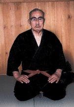

Minoru Mochizuki
de grondlegger van de yoseikan
door Dennis de Booij
Mochizuki werd op 7 april 1907 geboren in Shizuoka. Nadat zijn familie naar Tokio was verhuisd begon hij op vijfjarige leeftijd met judo en zes jaar later met kendo (de weg van het zwaard). In 1924 vervolgde hij zijn budo-opleiding bij de Kendokan dojo van Tokusanpo sensei, een destijds beroemde judoka en kendoka. Naast judo beoefende hij in die periode een oude jiu-jitsu stijl genaamd gyokushin ryu jiu jutsu. Deze stijl zou later het yoseikan beïnvloedden door de kenmerkende tai-sabaki (verplaatsingen) en sutemi waza (offerworp technieken).
In juni 1926 haalde Mochizuki zijn shodan (1e dan) judo in de Kodokan dojo (opgericht door de grondlegger van het judo, Jigoro Kano. Hij werd uchi deshi (inwonend student) van Kyuzo Mifune sensei, een befaamd judoleraar (10e dan) en directe leerling van Kano. Bij Mifune intensiveerde Mochizuki's training en het duurde niet lang voor dat Kano het talent van Mochizuki ontdekt. Kano sensei merkte dat de ontwikkeling van het judo te veel naar sport neigde en stelde een onderzoeksgroep voor klassieke bu-jitsu (krijgskunsten) samen die tot doel had de traditionele kennis en waarden te behouden. Volgens Kano is sport, oftewel competitie, een belangrijk onderdeel van judo maar niet het uiteindelijke doel. Mochizuki werd door Kano uitgenodigd om deel te nemen aan het project om de diverse klassieke disciplines aan de Kodokan syllabus toe te voegen. Mochizuki bestudeerde diverse klassieke stijlen waaronder jiu-jitsu, kendo (zwaardvechten), iaido (m.n. gericht op het snel trekken van het zwaard en vervolgens toeslaan) en tenshin shoden katori shinto ryu (klassieke stijl die o.a. gebruikt maakt van het zwaard, de speer en de hellebaard).
In 1930 stuurde Kano sensei Mochizuki naar Ueshiba sensei om daar het aikibudo (het latere aikido) te trainen. Het jaar daarop hielp Mochizuki Ueshiba met lesgeven in het Japanse leger. Later in dat jaar werd Mochizuki echter ziek. De plannen om bu-jitsu bij de Kodokan in te voeren kwamen niet meer tot uitvoering en Mochizuki keerde terug naar zijn geboortedorp om te herstellen. Daar richtte hij zijn eigen dojo op genaamd Yoseikan dojo. Yoseikan kan vertaald worden als 'het huis waar men tot rechtschapenheid wordt opgevoed'. Hier gaf hij les in alle stijlen die hij had geleerd en begon hij een visie te ontwikkelen waarin de verschillende disciplines werden geïntegreerd. In 1932 reikte Ueshiba het Menkyo Kaiden Aiki-jujutsu uit aan Mochizuki. Dit zijn twee perkamenten rollen die gelden als bewijs van meesterschap in het aiki-jujutsu.
In 1938 vertrok Mochizuki naar Mantsjoerije (Noordoost China) om daar in opdracht van de Japanse regering als bestuurder op te treden. China en Japan hadden naar aanleiding van de oorlog met Rusland in 1905 in deze regio een gezamenlijk bestuur opgezet. Na de Tweede Wereldoorlog keert Mochizuki terug naar Shizuoka en herstelt zijn Yoseikan dojo. In 1951 vertrok Mochizuki voor tweeëneenhalf jaar naar Frankrijk waar hij de eerste was die het aikido in Europa introduceerde. Jim Alcheik was één van zijn directe leerlingen. Zes jaar later stuurt Minoru Mochizuki zijn zoon Minoru naar Frankrijk om shotokan karate les te geven op verzoek van de Franse budopionier Henry Plee. In 1958 gaven Alcheik en Hiroo Mochizuki samen jiu-jitsu, judo en karate in de dojo's van Parijs en Versailles. Na de dood van Alcheik in 1963 nam zijn assistent Alain Floquet zijn taak over en werd Hiroo Mochizuki's tweede man. Minoru Mochizuki bleef vanuit Japan de leiding geven over het groeiend aantal afdelingen over de hele wereld.
Gedurende de jaren 50 en 60 beleef Minoru Mochizuki zijn martial arts kennis uitbreiden; hij kreeg zijn 5e dan Kendo en Jo Do (jo = stok) in 1956, zijn 8e dan Judo in 1977 en tot slot zijn 10e dan aikido in 1979 uit handen van een lid van de Japanse keizerlijke familie.
Mochizuki was één van de laatste leerlingen van de grootmeesters Kano, Mifune en Ueshiba. Volgens Mochizuki had zowel Kano als Ueshiba het principe wa no seishin (geest der harmonie) hoog in het vaandel. Bij wa no seishin gaat het om de ontwikkeling van zowel jij als jouw partner. Deze gezamenlijke ontwikkeling staat in contrast met bijvoorbeeld het beoefenen van wedstrijdsport waar je ten koste van je tegenstander als winnaar aan de top moet komen. Hoewel er veel te leren valt van sport is het niet het uiteindelijke doel van budo. Dat doel is een gezamenlijke ontwikkeling van de hele mensheid naar een hoger niveau.
Mochizuki verbleef in de laatste jaren van zijn leven bij zijn zoon Hiroo in Aix-en-provence, Frankrijk. Hier stierf hij op zesennegentigjarige leeftijd.
Een van Minoru Mochizuki's leerlingen is Roland Hernaez, hanshi. Hij is het hoofd van de Nihon Tai Jitsu stijl. Een andere leerling van Mochizuki is de Nederlander Edgar Kruyning die een aantal keer les heeft gegeven op onze districtstraining in Gouda.